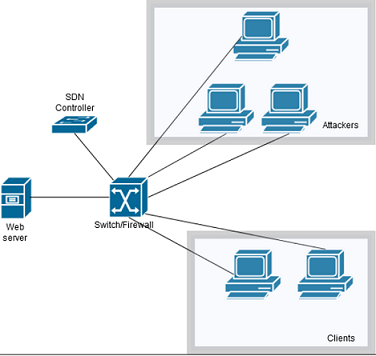

Start
1)Po instalacji środowiska następny krok to pobranie projektu z githuba i przełączenie się na odpowiedni branch.
$ git clone https://github.com/radziop/MPT_2019.git
$ git checkout dev_DDoS
2)Następnie musimy uruchomić środowisko Eclipse i utworzyć nowe Workspace i zaimportować projekt.
-File --> Import --> General --> Existing Projects into Workspace-Kliknąć na Browse obok Select root directory i znaleźć katalog do którego wypakowaliśmy projekt z dev_DDoS.
-W oknie projects zaznaczyć Floodlight
-Kliknąć przycisk Finish a projekt zostanie zaimportowany
3)Następnie musimy zbudować i uruchomić projekt w srodowisku Eclipse
-Z menu na górze --> Run--> Run Configurations-Prawym przyciskiem myszy wybrać Java Application --> New
-W polu nazwy wpisać FloodlightLaunch
-W polu Project wybrać Floodlight
-W polu Main Class wybrać net.floodlightcontroller.core.Main
-Kliknąć przycisk Apply i Run
Topologia

"""Topology
One switch, host acting as WWW server, one client host and one DoS attacker host :
WWW --- switch --- host --- host
--- attacker --- attacker --- attacker
to run topology:
sudo mn --custom DDoS_mininet_topology.py --topo mytopo_ddos --link=tc --controller=remote,ip=127.0.0.1,port=6653
"""
from mininet.topo import Topo
class MyTopo_ddos(Topo):
#"Simple topology example."
def __init__(self):
#"Create custom topo."
# Initialize topology
Topo.__init__(self)
# Add hosts and switches
wwwServer = self.addHost('www') #SERWER WWW
attackerHost1 = self.addHost('ah1') #ATAKUJĄCY 1
attackerHost2 = self.addHost('ah2') #ATAKUJĄCY 2
attackerHost3 = self.addHost('ah3') #ATAKUJĄCY 3
switch = self.addSwitch('s1') #SWITCH
clientHost1 = self.addHost('ch') #KLIENT 1
clientHost2 = self.addHost('ch2') #KLIENT 2
# Add links
self.addLink(wwwServer,switch,bw=10) #Połączenie między serwerem WWW a switchem z ustaloną predkością
self.addLink(attackerHost1,switch) #Połączenie między hostami a switchem.
self.addLink(attackerHost2,switch)
self.addLink(attackerHost3,switch)
self.addLink(clientHost1,switch)
self.addLink(clientHost2,switch)
topos = { 'mytopo_ddos': ( lambda: MyTopo_ddos() ) }
Symulacja
1)Następnie proszę uruchomić środowisko Mininet ze zdefiniowaną we wcześniejszym punkcie topologią wskazując, że wykorzystany będzie zewnętrzny kontroler.
$ sudo mn --custom DDoS_mininet_topology.py --topo mytopo_ddos --link=tc --controller=remote,ip=127.0.0.1,port=6653
2)W tym momencie została zbudowana topologia testowa.

3)Następnie można zasymulować atak włączając konsolę xterm oraz na serwerze www włączając iperfa jako serwer
4) Następnie proszę włączyć konsolę pozostałych hostów wydając polecenia $ xterm #nazwa_węzła#
5) Następnie możemy włączyć iperfa z dużą ilością jednoczesnych połączeń lub Hibernet(https://github.com/All3xJ/Hibernet) aplikację zasypujaca serwer WWW jednoczesnymi połączeniami HTTP. Wtedy dodatkowo bedziemy musieli postawic serwer www poleceniem:
$ python -m SimpleHTTPServer 80
6)Przy iperf wydajemy polecenia kolejno na serwerze i na kliencie (25 jednoczesnych połączeń):
$ iperf -s
$ iperf -c -P 25
7)Powinniśmy dostać output na konsoli o zdroppowaniu flowu.
Opisy zmiennych i klas
Projekt posiada dwie główne klasy napisane przez nas w javie.
1)Pierwsza z nich to PacketAnalyzer.java, gdzie wyciągamy zawartości otrzymanych pakietów typu PACKET_IN w sieci oraz na tej podstawie, zliczamy ile przepływów pochodzi z danego adresu IP(funkcja flowCounter). Wykonujemy również funkcję zmniejszającą tenże licznik po upływie odpowiedniej ilości czasu (decrementIPCounter).
private int decrementTimer = 40000; //czas w milisekundach, czas do zmniejszenia licznika dla danego flowu o 1
2) Kolejna klasa to DDOS.java, gdzie napisana jest funkcja dropFlow i receive odpowiedzialna za dropowanie danego flowu. Zlicza ona ilość połączeń w danym flowie i jeśli osiągnie dany threshold (singleIPTreshold) dropuje flow. Dodatkowo zaimplementowaliśmy algorytm, który jeśli wykryje atak z wielu hostów to dropuje flow, który ma największy licznik połączeń, aż do momentu w którym suma wszystkich połączeń do serwera nie przekracza bezpiecznego progu (allIPTreshold)
Poniżej opis zmiennych w tej klasie:
private int allIPTreshold = 500; //max counter for all flows at a time. When reached, the flow that has the largest counter is being dropped private int singleIPTreshold = 20; //max counter for given flow. When reached, the flow is being dropped private int idle = 120; //in seconds, idleTimeout that will be set for flows destined to be dropped private int hard = 1200; //in seconds, hardTimeout that will be set for flows destined to be dropped